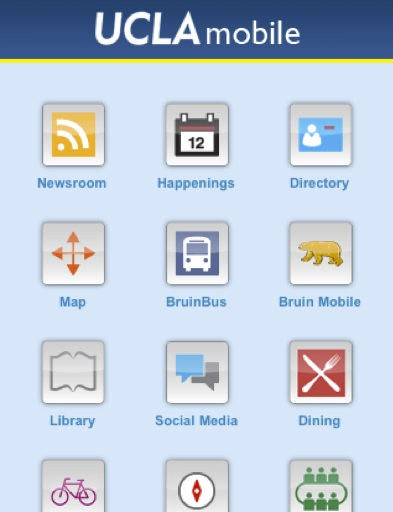

is pervasive, growing and evolving.
Mobile is soon to overtake the desktop in usage
Over 75% of students have an internet-capable mobile device
Unfortunately, mobile isn't a homogenous environment
Evolving strategies for addressing this landscape
Mixed support between devices
New and evolving API
Semantic markup standard
Dynamic CSS and Javascript
Platform independence and federation
Create a page with script and link tag:
<link rel="stylesheet" type="text/css" href=”http://[DOMAIN]/assets/css.php">
<script type="text/javascript" src=“http://[DOMAIN]/assets/js.php”></script>Start using the MWF!
An app has a page with MWF handlers
When a user visits the page,
Process is transparent to the app (semantic markup)
The Mobile Web Framework in Action
Framework-as-a-service
One framework server, many applications
Traditionally, hosted on campus
But what about off-campus redundancy?
"Corporation for Education Network Initiatives in California"
Pilot with UC to host the MWF
Model allows it to be transparent for apps
CSS and JS handlers as usual
<link rel="stylesheet" type="text/css" href=”http://[DOMAIN]/assets/css.php">
<script type="text/javascript" src=“http://[DOMAIN]/assets/js.php”></script>And that's it!
A Responsive Approach
Fully-capable mobile devices are becoming more pervasive
Changing perceptions of how mobile is used
Responsive design is now a viable strategy
Adapting MWF for responsive is the wrong route
... and thus the WebBlocks responsive toolkit is born
Many concepts shared between MWF and WebBlocks:
Use cases drive what works for you:
A lot of good tools already exist
Not every use case is the same
Architecture of packages, adapters and extensions
Modern web standards such as media query
Powerful fluid layout system
Rich UI element and interactivity libraries
Customized builds exactly for needs
Adapters to bind to other frameworks
Extensions for campus and unit specific needs
A Federated Web App Portal
At first, we built obvious campus-wide apps
But then, we started getting niche apps
How do we organize this growth of apps?
For native, there's the app store
But what about mobile web apps?
|  |
Not every app is campus-specific
We could "tell" each other about these apps
Propagation
Flexible Topology
And now onto...
BYOD audience response collection